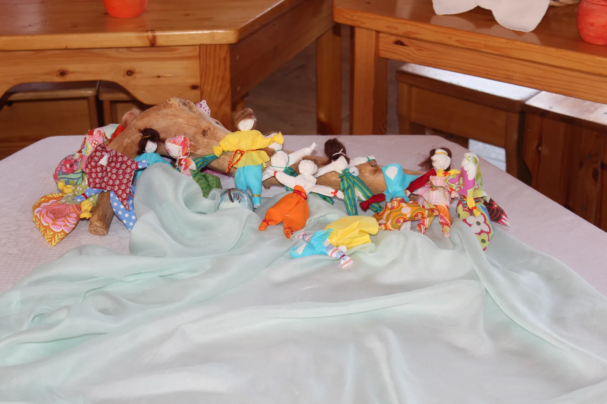

Вальдорфский детский сад · Москва · Строгино
Детство, в котором есть время на игру
«Алёнушка» в Строгино: вальдорфская программа, разновозрастные группы и тёплый ритм дня. С 1990 года.

С 1990 года
Больше 35 лет работаем в Строгино по вальдорфской педагогике.
Программа «Берёзка»
Вальдорфская программа дошкольного образования, по ФГОС ДО.
Как большая семья
Две разновозрастные группы: младшие учатся у старших, старшие заботятся о младших.
Живой ритм дня
Свободная игра, творчество, музыка, сказка и прогулки — каждый день в одном ритме.
Четыре приёма пищи
Завтрак, второй завтрак, обед и полдник по утверждённому десятидневному меню.
Охрана и медкабинет
Круглосуточная охрана, тревожная кнопка, видеонаблюдение и свой медицинский кабинет.
«Большая дружная семья»
— о нашем детском садеПриходите в гости вместе с ребёнком
Москва, ул. Кулакова, д. 3, корп. 2 · м. «Строгино»